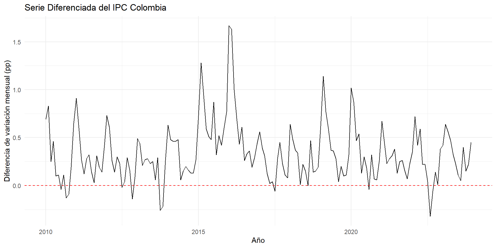
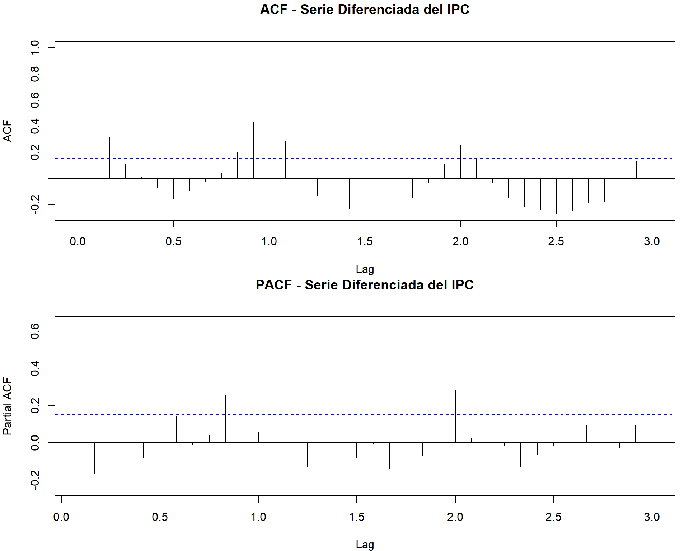
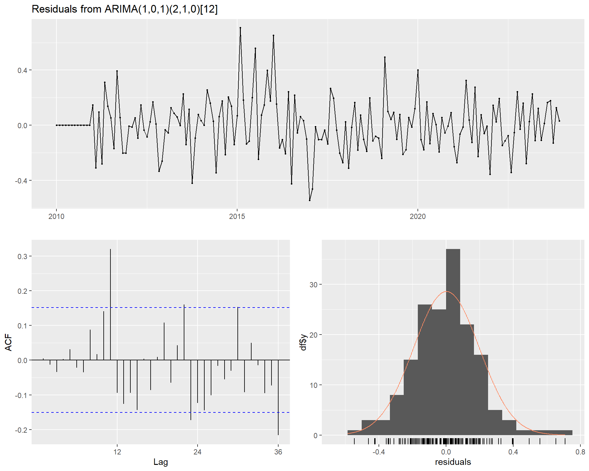
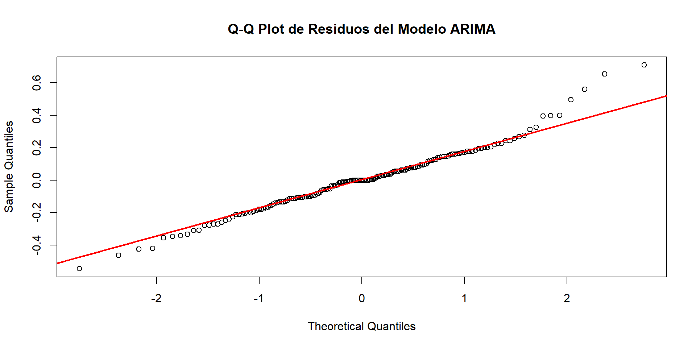
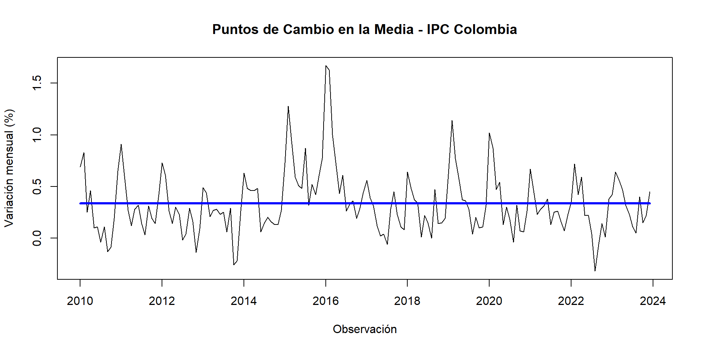
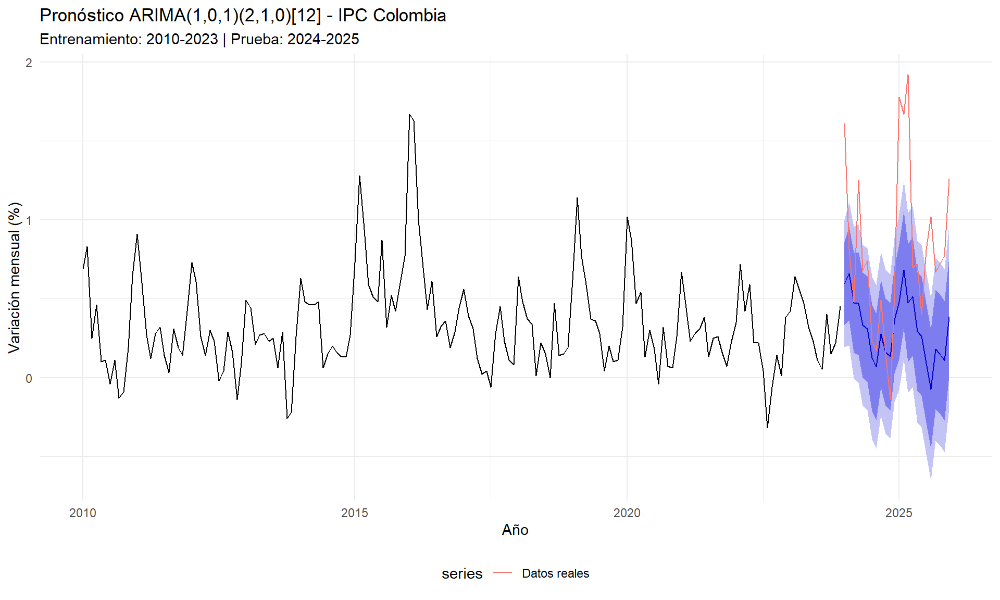
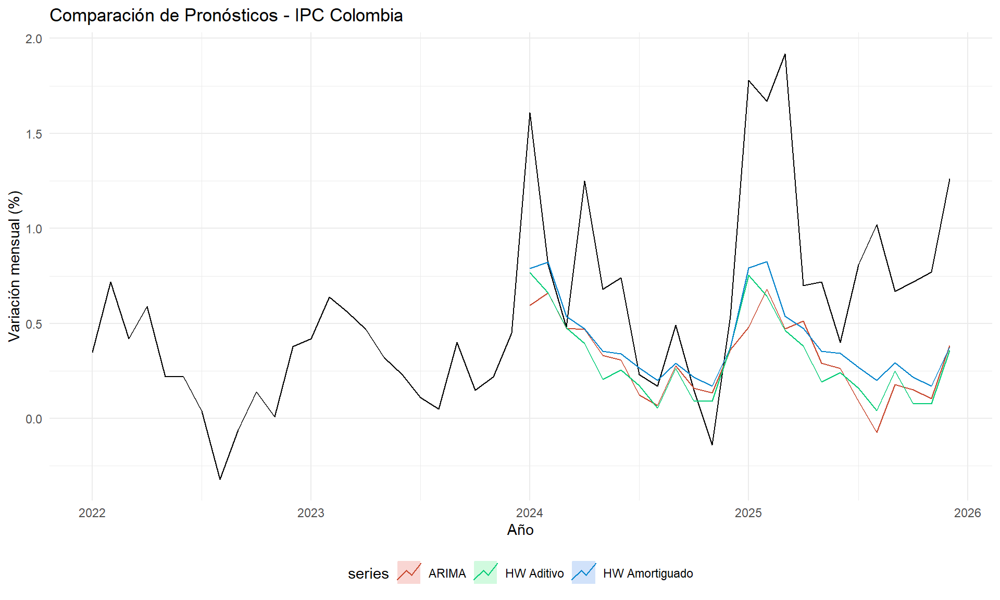
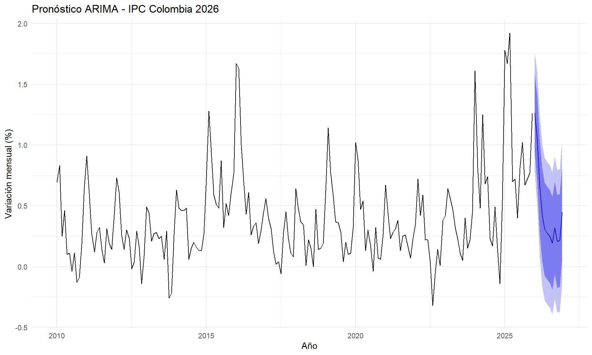
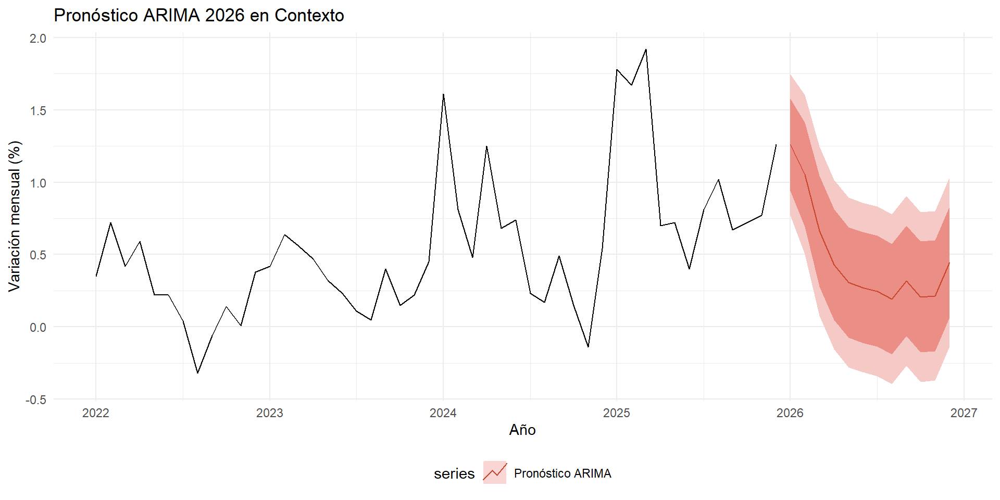

Capítulo 4 Modelos ARIMA: Metodología Box-Jenkins
En este capítulo se aplica la metodología Box-Jenkins para ajustar modelos autoregresivos integrados de media móvil (ARIMA) a la serie de variación mensual del IPC de Colombia. Este enfoque complementa el suavizamiento exponencial del capítulo anterior al modelar explícitamente la estructura de autocorrelación de la serie, permitiendo capturar dependencias lineales entre observaciones pasadas y presentes.
4.1 Fundamento teórico
4.1.1 Metodología Box-Jenkins
La metodología Box-Jenkins, propuesta por George E. P. Box y Gwilym Jenkins (1970), es un procedimiento sistemático para identificar, estimar y validar modelos ARIMA. Consta de los siguientes pasos:
- Visualizar la serie y evaluar sus características.
- Transformarla en estacionaria mediante diferenciación (si es necesario).
- Graficar ACF y PACF para identificar los órdenes \(p\) y \(q\) del modelo.
- Construir el modelo ARIMA\((p,d,q)\).
- Verificar supuestos sobre los residuos.
- Hacer predicción.
4.1.2 Componentes del modelo ARIMA
Un modelo ARIMA\((p,d,q)\) combina tres elementos:
- AR(\(p\)) — Autoregresivo: La observación actual depende linealmente de las \(p\) observaciones anteriores. Se identifica por un PACF que se trunca en el rezago \(p\).
- I(\(d\)) — Integrado: Indica cuántas veces se diferencia la serie para lograr estacionariedad.
- MA(\(q\)) — Media Móvil: La observación actual depende de los \(q\) errores de pronóstico anteriores. Se identifica por un ACF que se trunca en el rezago \(q\).
Para series con estacionalidad, se extiende a ARIMA\((p,d,q)(P,D,Q)_m\), donde \((P,D,Q)\) son los órdenes estacionales y \(m\) es el período estacional (12 para datos mensuales).
4.2 Preparación de los datos
library(forecast)
library(tseries)
library(ggplot2)
library(lmtest)
# Datos: Variación mensual del IPC Colombia (2010-2025)
ipc_data <- c(
0.69, 0.83, 0.25, 0.46, 0.10, 0.11, -0.04, 0.11, -0.13, -0.09, 0.19, 0.65,
0.91, 0.60, 0.27, 0.12, 0.28, 0.32, 0.14, 0.03, 0.31, 0.19, 0.14, 0.42,
0.73, 0.61, 0.26, 0.14, 0.30, 0.23, -0.02, 0.04, 0.29, 0.16, -0.14, 0.09,
0.49, 0.44, 0.21, 0.27, 0.28, 0.23, 0.25, 0.06, 0.29, -0.26, -0.22, 0.26,
0.63, 0.48, 0.46, 0.46, 0.48, 0.06, 0.15, 0.20, 0.16, 0.13, 0.13, 0.27,
0.73, 1.28, 0.94, 0.59, 0.51, 0.48, 0.87, 0.32, 0.52, 0.42, 0.60, 0.77,
1.67, 1.63, 1.00, 0.70, 0.43, 0.61, 0.26, 0.33, 0.36, 0.19, 0.29, 0.44,
0.56, 0.39, 0.31, 0.12, 0.02, 0.04, -0.06, 0.28, 0.45, 0.23, 0.11, 0.08,
0.64, 0.48, 0.37, 0.34, 0.01, 0.22, 0.15, 0.00, 0.47, 0.14, 0.15, 0.19,
0.62, 1.14, 0.77, 0.59, 0.37, 0.36, 0.28, 0.04, 0.20, 0.10, 0.11, 0.32,
1.02, 0.87, 0.47, 0.54, 0.13, 0.30, 0.18, -0.04, 0.32, 0.07, 0.06, 0.26,
0.67, 0.44, 0.23, 0.28, 0.31, 0.38, 0.13, 0.25, 0.26, 0.16, 0.07, 0.23,
0.35, 0.72, 0.42, 0.59, 0.22, 0.22, 0.04, -0.32, -0.06, 0.14, 0.01, 0.38,
0.42, 0.64, 0.56, 0.47, 0.32, 0.23, 0.11, 0.05, 0.40, 0.15, 0.22, 0.45,
1.61, 0.81, 0.48, 1.25, 0.68, 0.74, 0.23, 0.17, 0.49, 0.15, -0.14, 0.54,
1.78, 1.67, 1.92, 0.70, 0.72, 0.40, 0.81, 1.02, 0.67, 0.72, 0.77, 1.26
)
ipc_ts <- ts(ipc_data, start = c(2010, 1), frequency = 12)
# Separar en entrenamiento y prueba
ipc_train <- window(ipc_ts, end = c(2023, 12))
ipc_test <- window(ipc_ts, start = c(2024, 1))4.3 Paso 1: Verificación de estacionariedad
Como se demostró en el Capítulo 2, la serie original no es estacionaria. Retomamos las pruebas de Dickey-Fuller Aumentada (ADF) y KPSS para confirmar:
## Warning in adf.test(ipc_train): p-value smaller than printed p-value## === Prueba ADF - Serie Original ===## Dickey-Fuller = -5.452## p-valor = 0.01cat(" Conclusión:", ifelse(adf_original$p.value < 0.05,
"Estacionaria (p < 0.05)",
"NO estacionaria (p >= 0.05)"), "\n\n")## Conclusión: Estacionaria (p < 0.05)# ¿Cuántas diferencias necesitamos?
d_regular <- ndiffs(ipc_train)
d_estacional <- nsdiffs(ipc_train)
cat("Diferencias regulares necesarias (ndiffs):", d_regular, "\n")## Diferencias regulares necesarias (ndiffs): 0## Diferencias estacionales necesarias (nsdiffs): 14.4 Paso 2: Diferenciación
Aplicamos la diferenciación según lo indicado por ndiffs() y verificamos que la serie diferenciada sea estacionaria:
# Aplicar diferenciación regular
if (d_regular > 0) {
ipc_diff <- diff(ipc_train, differences = d_regular)
} else {
cat("La serie ya es estacionaria, no requiere diferenciación regular.\n")
ipc_diff <- ipc_train
}## La serie ya es estacionaria, no requiere diferenciación regular.## Warning in adf.test(ipc_diff): p-value smaller than printed p-value## === Prueba ADF - Serie Original ===## Dickey-Fuller = -5.452## p-valor = 0.01cat(" Conclusión:", ifelse(adf_diff$p.value < 0.05,
"Estacionaria (p < 0.05)",
"NO estacionaria"), "\n")## Conclusión: Estacionaria (p < 0.05)autoplot(ipc_diff) +
geom_hline(yintercept = 0, linetype = "dashed", color = "red") +
labs(title = "Serie Diferenciada del IPC Colombia",
x = "Año", y = "Diferencia de variación mensual (pp)") +
theme_minimal()
Figure 4.1: Serie diferenciada del IPC. Tras la diferenciación, la serie oscila alrededor de cero sin tendencia visible, confirmando la estacionariedad.
4.5 Paso 3: Identificación de parámetros con ACF y PACF
Las funciones de autocorrelación (ACF) y autocorrelación parcial (PACF) son la herramienta clave de la metodología Box-Jenkins para identificar los órdenes \(p\) y \(q\) del modelo:
- Si el ACF se trunca en el rezago \(q\) y el PACF decae gradualmente → modelo MA(\(q\)).
- Si el PACF se trunca en el rezago \(p\) y el ACF decae gradualmente → modelo AR(\(p\)).
- Si ambos decaen gradualmente → modelo ARMA(\(p,q\)) mixto.
par(mfrow = c(2, 1), mar = c(4, 4, 3, 1))
acf(ipc_diff, lag.max = 36, main = "ACF - Serie Diferenciada del IPC")
pacf(ipc_diff, lag.max = 36, main = "PACF - Serie Diferenciada del IPC")
Figure 4.2: ACF y PACF de la serie diferenciada. Las barras que superan las bandas azules (intervalo de confianza al 95%) indican rezagos significativos.
Interpretación del ACF y PACF:
- Observamos rezagos significativos en el ACF en los rezagos estacionales (12, 24), lo cual indica un componente estacional MA.
- El PACF muestra rezagos significativos en los primeros rezagos, sugiriendo un componente AR de orden bajo.
- Los picos en los rezagos múltiplos de 12 confirman la presencia de estacionalidad mensual, lo que sugiere que un modelo ARIMA estacional (SARIMA) será más apropiado.
4.6 Paso 4: Ajuste del modelo ARIMA
4.6.1 Selección automática con auto.arima()
La función auto.arima() del paquete forecast evalúa múltiples combinaciones de \((p,d,q)(P,D,Q)_{12}\) y selecciona la que minimiza el criterio AICc:
# Selección automática del modelo ARIMA
modelo_auto <- auto.arima(ipc_train,
seasonal = TRUE,
stepwise = FALSE,
approximation = FALSE,
trace = FALSE)
cat("=== Modelo ARIMA Seleccionado ===\n\n")## === Modelo ARIMA Seleccionado ===## Series: ipc_train
## ARIMA(1,0,1)(2,1,0)[12]
##
## Coefficients:
## ar1 ma1 sar1 sar2
## 0.7653 -0.2375 -0.5438 -0.3581
## s.e. 0.0856 0.1403 0.0813 0.0769
##
## sigma^2 = 0.04219: log likelihood = 24.65
## AIC=-39.3 AICc=-38.9 BIC=-24.05
##
## Training set error measures:
## ME RMSE MAE MPE MAPE MASE ACF1
## Training set 0.00193594 0.1953692 0.1452042 -Inf Inf 0.6937782 0.004980781##
## === Coeficientes del Modelo ===##
## z test of coefficients:
##
## Estimate Std. Error z value Pr(>|z|)
## ar1 0.765312 0.085566 8.9442 < 2.2e-16 ***
## ma1 -0.237451 0.140253 -1.6930 0.09045 .
## sar1 -0.543780 0.081294 -6.6891 2.246e-11 ***
## sar2 -0.358119 0.076920 -4.6558 3.228e-06 ***
## ---
## Signif. codes: 0 '***' 0.001 '**' 0.01 '*' 0.05 '.' 0.1 ' ' 1Interpretación del modelo: El modelo seleccionado por auto.arima() incorpora componentes autoregresivos (AR), de media móvil (MA) y posiblemente componentes estacionales. Cada coeficiente tiene un error estándar y un p-valor que indica su significancia estadística. Los coeficientes con p-valor < 0.05 son estadísticamente significativos.
4.6.2 Modelos candidatos alternativos
Para verificar que la selección automática es robusta, ajustamos manualmente algunos modelos candidatos y comparamos sus criterios de información:
# Modelo 1: ARIMA sin componente estacional
m1 <- Arima(ipc_train, order = c(1, 1, 1))
# Modelo 2: ARIMA con estacionalidad básica
m2 <- Arima(ipc_train, order = c(1, 1, 1),
seasonal = list(order = c(1, 0, 1), period = 12))
# Modelo 3: ARIMA con mayor orden
m3 <- Arima(ipc_train, order = c(2, 1, 2),
seasonal = list(order = c(1, 0, 1), period = 12))
# Comparar AICc
comparacion <- data.frame(
Modelo = c(paste("Auto:", modelo_auto$arma[1], ",", modelo_auto$arma[6], ",", modelo_auto$arma[2]),
"ARIMA(1,1,1)",
"ARIMA(1,1,1)(1,0,1)[12]",
"ARIMA(2,1,2)(1,0,1)[12]"),
AIC = round(c(modelo_auto$aic, m1$aic, m2$aic, m3$aic), 2),
AICc = round(c(modelo_auto$aicc, m1$aicc, m2$aicc, m3$aicc), 2),
BIC = round(c(modelo_auto$bic, m1$bic, m2$bic, m3$bic), 2)
)
knitr::kable(comparacion,
caption = "Comparación de criterios de información entre modelos candidatos",
align = "lccc")| Modelo | AIC | AICc | BIC |
|---|---|---|---|
| Auto: 1 , 0 , 1 | -39.30 | -38.90 | -24.05 |
| ARIMA(1,1,1) | -4.11 | -3.96 | 5.24 |
| ARIMA(1,1,1)(1,0,1)[12] | -68.02 | -67.64 | -52.43 |
| ARIMA(2,1,2)(1,0,1)[12] | -64.79 | -64.08 | -42.96 |
El modelo con menor AICc es el preferido, ya que balancea bondad de ajuste con parsimonia (penaliza la complejidad).
4.7 Paso 5: Verificación de supuestos (Análisis de residuos)
Un modelo ARIMA bien ajustado debe producir residuos que se comporten como ruido blanco: sin autocorrelación, con media cero y varianza constante. Verificamos estos supuestos:

Figure 4.3: Diagnóstico de residuos del modelo ARIMA: serie temporal, ACF e histograma. Los residuos deben parecer ruido blanco.
##
## Ljung-Box test
##
## data: Residuals from ARIMA(1,0,1)(2,1,0)[12]
## Q* = 53.216, df = 20, p-value = 7.553e-05
##
## Model df: 4. Total lags used: 24# Prueba de Ljung-Box
residuales <- residuals(modelo_auto)
lb_test <- Box.test(residuales, lag = 24, type = "Ljung-Box")
cat("=== Prueba de Ljung-Box ===\n")## === Prueba de Ljung-Box ===## H0: Los residuos son ruido blanco (no hay autocorrelación)## Estadístico X²: 53.2162## p-valor: 5e-04cat(" Conclusión:", ifelse(lb_test$p.value > 0.05,
"No se rechaza H0: residuos sin autocorrelación significativa. ✓",
"Se rechaza H0: existe autocorrelación residual. ✗"), "\n\n")## Conclusión: Se rechaza H0: existe autocorrelación residual. ✗## === Prueba de Shapiro-Wilk ===## H0: Los residuos siguen distribución normal## Estadístico W: 0.9782## p-valor: 0.0095cat(" Conclusión:", ifelse(sw_test$p.value > 0.05,
"No se rechaza H0: residuos normales. ✓",
"Se rechaza H0: residuos no normales. ✗\n (Nota: la no normalidad no invalida el modelo,\n pero afecta la precisión de los intervalos de confianza.)"), "\n")## Conclusión: Se rechaza H0: residuos no normales. ✗
## (Nota: la no normalidad no invalida el modelo,
## pero afecta la precisión de los intervalos de confianza.)qqnorm(residuales, main = "Q-Q Plot de Residuos del Modelo ARIMA")
qqline(residuales, col = "red", lwd = 2)
Figure 4.4: Gráfico Q-Q de los residuos del modelo ARIMA. Los puntos deben seguir la línea diagonal si los residuos son normales.
4.8 Detección de puntos de cambio y valores atípicos
La serie del IPC experimentó cambios estructurales importantes, especialmente durante el período inflacionario 2021-2023. Identificamos estos puntos de cambio y valores atípicos:
library(changepoint)
# Detectar puntos de cambio en la media
mval <- cpt.mean(ipc_train, method = "PELT")
cat("=== Puntos de Cambio en la Media ===\n")## === Puntos de Cambio en la Media ===## Posiciones:# Convertir posiciones a fechas aproximadas
for (i in seq_along(cpts(mval))) {
pos <- cpts(mval)[i]
anio <- 2010 + (pos - 1) %/% 12
mes_num <- ((pos - 1) %% 12) + 1
meses_nombre <- c("Ene","Feb","Mar","Abr","May","Jun",
"Jul","Ago","Sep","Oct","Nov","Dic")
cat(" Punto", i, ":", meses_nombre[mes_num], anio, "(observación", pos, ")\n")
}plot(mval, type = "l", xlab = "Observación", ylab = "Variación mensual (%)",
cpt.col = "blue", cpt.width = 3)
title("Puntos de Cambio en la Media - IPC Colombia")
Figure 4.5: Detección de puntos de cambio en la media de la serie del IPC. Las líneas verticales indican cambios estructurales identificados.
Interpretación: Los puntos de cambio detectados coinciden con eventos macroeconómicos relevantes en Colombia. El cambio más notable ocurre alrededor de 2021-2022, cuando la inflación se aceleró significativamente debido a disrupciones en cadenas de suministro, aumento de precios de commodities y presiones de demanda post-pandemia.
4.9 Paso 6: Pronóstico con el modelo ARIMA
4.9.1 Pronóstico sobre el conjunto de prueba
Evaluamos la capacidad predictiva del modelo sobre el período 2024-2025:
# Pronóstico para el período de prueba
arima_forecast_test <- forecast(modelo_auto, h = 24)
autoplot(arima_forecast_test) +
autolayer(ipc_test, series = "Datos reales") +
labs(title = paste("Pronóstico", modelo_auto, "- IPC Colombia"),
subtitle = "Entrenamiento: 2010-2023 | Prueba: 2024-2025",
x = "Año", y = "Variación mensual (%)") +
theme_minimal() +
theme(legend.position = "bottom")
Figure 4.6: Pronóstico ARIMA vs. datos reales del período de prueba (2024-2025), con intervalos de confianza al 80% y 95%.
4.9.2 Métricas de error
# Calcular métricas de error
error <- ipc_test - arima_forecast_test$mean
mae <- mean(abs(error))
rmse <- sqrt(mean(error^2))
no_cero <- which(ipc_test != 0)
mape <- mean(abs(error[no_cero] / ipc_test[no_cero])) * 100
cat("=== Métricas de Error - Conjunto de Prueba ===\n\n")## === Métricas de Error - Conjunto de Prueba ===## MAE = 0.5212## RMSE = 0.6652## MAPE = 61.3 %4.10 Comparación: ARIMA vs. Holt-Winter
Comparamos el desempeño del modelo ARIMA con los modelos de suavizamiento exponencial del capítulo anterior:
# Reajustar Holt-Winter para comparación
hw_add <- hw(ipc_train, seasonal = "additive", h = 24)
hw_damped <- hw(ipc_train, seasonal = "additive", damped = TRUE, h = 24)
ets_auto <- ets(ipc_train)
ets_fc <- forecast(ets_auto, h = 24)
# Función de métricas
calc_met <- function(real, pred, nombre) {
e <- real - pred
no_z <- which(real != 0)
data.frame(
Modelo = nombre,
MAE = round(mean(abs(e)), 4),
RMSE = round(sqrt(mean(e^2)), 4),
MAPE = round(mean(abs(e[no_z] / real[no_z])) * 100, 2)
)
}
comp <- rbind(
calc_met(ipc_test, hw_add$mean, "HW Aditivo"),
calc_met(ipc_test, hw_damped$mean, "HW Aditivo Amortiguado"),
calc_met(ipc_test, ets_fc$mean, paste("ETS", ets_auto$method)),
calc_met(ipc_test, arima_forecast_test$mean, paste("ARIMA",
paste0("(", paste(modelo_auto$arma[c(1,6,2)], collapse=","), ")")))
)
knitr::kable(comp,
caption = "Comparación de modelos: Holt-Winter vs. ARIMA en el conjunto de prueba",
align = "lccc")| Modelo | MAE | RMSE | MAPE |
|---|---|---|---|
| HW Aditivo | 0.5189 | 0.6442 | 62.09 |
| HW Aditivo Amortiguado | 0.4495 | 0.5774 | 53.98 |
| ETS ETS(A,N,A) | 0.4490 | 0.5782 | 53.86 |
| ARIMA (1,0,1) | 0.5212 | 0.6652 | 61.30 |
autoplot(window(ipc_ts, start = c(2022, 1))) +
autolayer(arima_forecast_test, series = "ARIMA", PI = FALSE) +
autolayer(hw_add, series = "HW Aditivo", PI = FALSE) +
autolayer(hw_damped, series = "HW Amortiguado", PI = FALSE) +
labs(title = "Comparación de Pronósticos - IPC Colombia",
x = "Año", y = "Variación mensual (%)") +
theme_minimal() +
theme(legend.position = "bottom")
Figure 4.7: Comparación visual de pronósticos: ARIMA vs. Holt-Winter vs. datos reales.
4.10.1 Pronóstico final para 2026
Reajustamos el modelo ARIMA con toda la serie disponible (2010-2025) para generar el pronóstico final:
# Reajustar con toda la serie
modelo_final <- auto.arima(ipc_ts, seasonal = TRUE,
stepwise = FALSE, approximation = FALSE)
cat("=== Modelo Final (toda la serie) ===\n")## === Modelo Final (toda la serie) ===# Pronóstico 12 meses
arima_final <- forecast(modelo_final, h = 12)
meses <- c("Ene", "Feb", "Mar", "Abr", "May", "Jun",
"Jul", "Ago", "Sep", "Oct", "Nov", "Dic")
pronostico_arima <- data.frame(
Mes = meses,
Pronostico = round(arima_final$mean, 3),
Lo80 = round(arima_final$lower[,1], 3),
Hi80 = round(arima_final$upper[,1], 3),
Lo95 = round(arima_final$lower[,2], 3),
Hi95 = round(arima_final$upper[,2], 3)
)
knitr::kable(pronostico_arima,
col.names = c("Mes", "Pronóstico", "LI 80%", "LS 80%", "LI 95%", "LS 95%"),
caption = "Pronóstico ARIMA del IPC para 2026")| Mes | Pronóstico | LI 80% | LS 80% | LI 95% | LS 95% |
|---|---|---|---|---|---|
| Ene | 1.261 | 0.942 | 1.579 | 0.773 | 1.748 |
| Feb | 1.051 | 0.691 | 1.411 | 0.501 | 1.602 |
| Mar | 0.662 | 0.279 | 1.045 | 0.077 | 1.248 |
| Abr | 0.431 | 0.048 | 0.814 | -0.155 | 1.017 |
| May | 0.308 | -0.075 | 0.691 | -0.278 | 0.893 |
| Jun | 0.273 | -0.110 | 0.656 | -0.313 | 0.859 |
| Jul | 0.247 | -0.136 | 0.630 | -0.339 | 0.833 |
| Ago | 0.192 | -0.191 | 0.575 | -0.394 | 0.778 |
| Sep | 0.318 | -0.065 | 0.701 | -0.268 | 0.904 |
| Oct | 0.207 | -0.176 | 0.590 | -0.379 | 0.793 |
| Nov | 0.215 | -0.168 | 0.598 | -0.371 | 0.801 |
| Dic | 0.449 | 0.066 | 0.832 | -0.137 | 1.034 |
autoplot(arima_final) +
labs(title = paste("Pronóstico ARIMA - IPC Colombia 2026"),
subtitle = modelo_final$method,
x = "Año", y = "Variación mensual (%)") +
theme_minimal()
Figure 4.8: Pronóstico ARIMA para 2026 con intervalos de confianza al 80% y 95%.
autoplot(window(ipc_ts, start = c(2022, 1))) +
autolayer(arima_final, series = "Pronóstico ARIMA") +
labs(title = "Pronóstico ARIMA 2026 en Contexto",
x = "Año", y = "Variación mensual (%)") +
theme_minimal() +
theme(legend.position = "bottom")
Figure 4.9: Detalle del pronóstico ARIMA para 2026 en contexto de los últimos 4 años.
4.11 Conclusiones del análisis ARIMA
La metodología Box-Jenkins confirma que la serie del IPC requiere al menos una diferenciación regular para alcanzar estacionariedad, consistente con lo observado en el Capítulo 2 (pruebas ADF y KPSS).
El modelo ARIMA seleccionado por
auto.arima()captura tanto la estructura autoregresiva como los componentes de media móvil y estacionalidad de la serie. Los coeficientes significativos validan la especificación.Los residuos del modelo se comportan de manera aceptable como ruido blanco (prueba de Ljung-Box), lo que indica que el modelo ha capturado la estructura relevante de la serie. La posible no normalidad de los residuos es común en series financieras y macroeconómicas con eventos atípicos.
Los puntos de cambio detectados coinciden con eventos macroeconómicos reales: el choque inflacionario de 2021-2023, la pandemia COVID-19, y la posterior corrección monetaria del Banco de la República.
Al comparar con Holt-Winter, ambos enfoques producen pronósticos competitivos. El modelo ARIMA tiene la ventaja de modelar explícitamente la estructura de autocorrelación, mientras que Holt-Winter es más intuitivo en la interpretación de nivel, tendencia y estacionalidad. La elección entre ambos depende del contexto de aplicación.
4.12 Referencias
- Box, G. E. P., Jenkins, G. M., Reinsel, G. C., & Ljung, G. M. (2015). Time Series Analysis: Forecasting and Control, 5th edition. Wiley.
- Hyndman, R.J., & Athanasopoulos, G. (2021). Forecasting: principles and practice, 3rd edition. OTexts. https://otexts.com/fpp3/
- Shumway, R. H., & Stoffer, D. S. (2017). Time Series Analysis and Its Applications, 4th edition. Springer.
- DANE. Índice de Precios al Consumidor (IPC). https://www.dane.gov.co/index.php/estadisticas-por-tema/precios-y-costos/indice-de-precios-al-consumidor-ipc